book_characters_authors_batch / emma_bovary
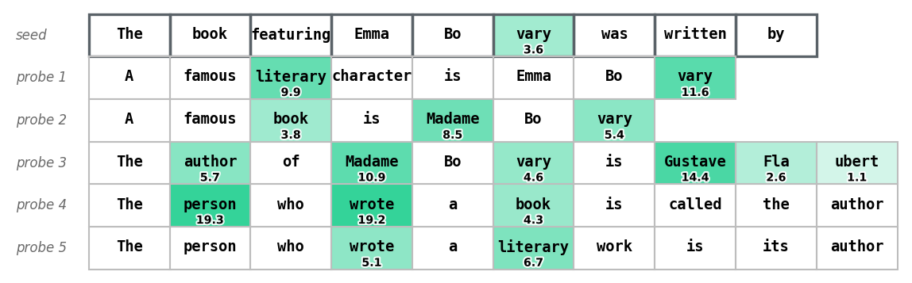
book_characters_authors_batch / gregor_samsa
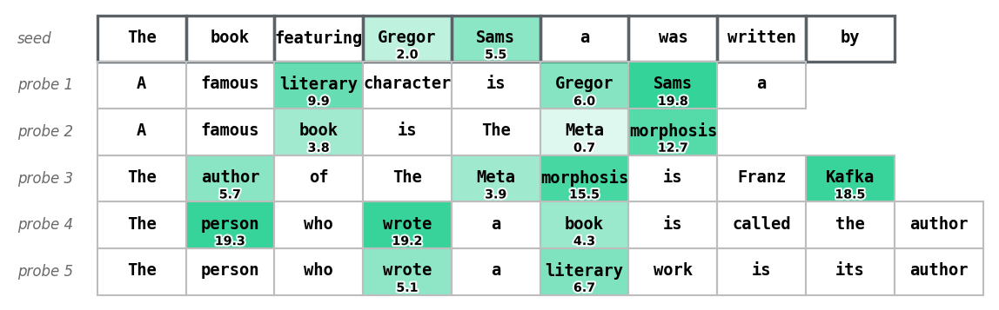
book_characters_authors_batch / raskolnikov
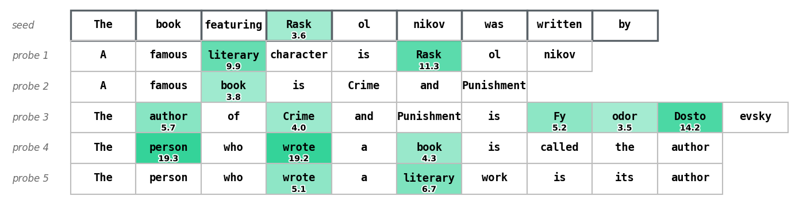
paintings_painters_batch / guernica
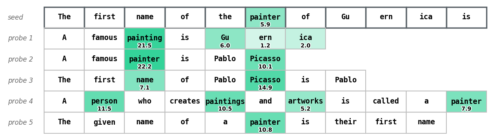
paintings_painters_batch / nighthawks
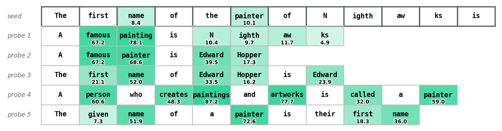
paintings_painters_batch / nighthawks
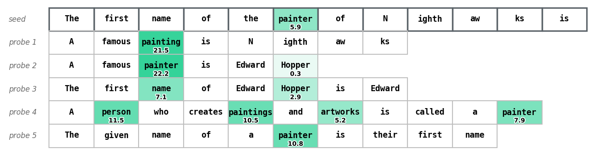
products_founders_batch / alibaba
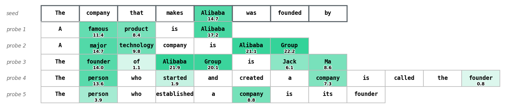
products_founders_batch / nike_shoes
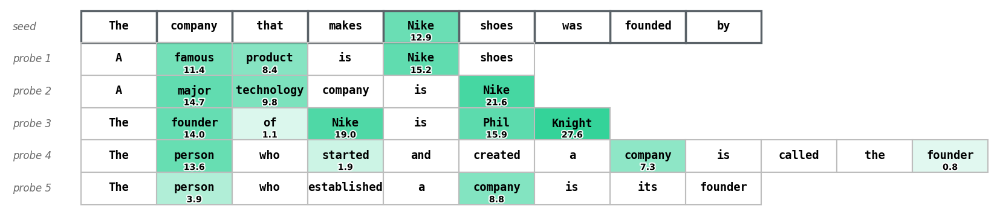
products_founders_batch / oracle_db
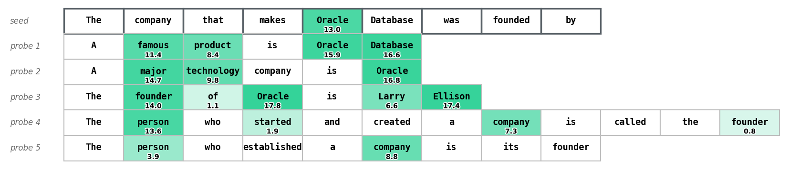
sounds_colors_batch / buzz
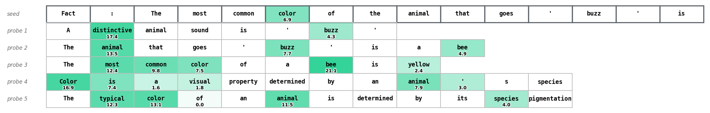
sounds_colors_batch / hiss
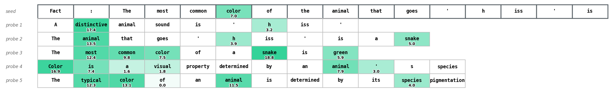
sounds_colors_batch / oink
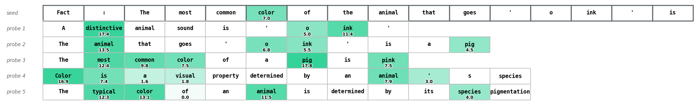
usa_states_batch / arizona_Tucson
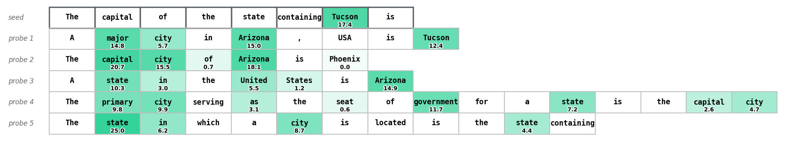
usa_states_batch / massachusetts_Worcester

usa_states_batch / missouri_kansas_city
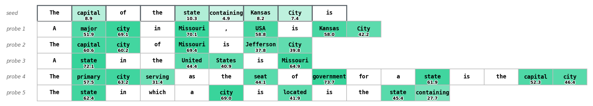